The planning loop
Video unavailable. Please reload to try again.
Aerial observations guide the route; onboard sensing determines local feasibility.
Aerial terrain guidance. Local ground autonomy.
Video unavailable. Please reload to try again.
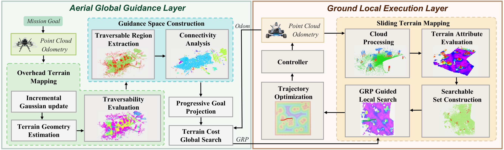
Video unavailable. Please reload to try again.
Aerial observations guide the route; onboard sensing determines local feasibility.
Video unavailable. Please reload to try again.
Aerial terrain costs and the GRP update as observations expand.
Video unavailable. Please reload to try again.
Soft guidance allows a local detour when aerial sensing misses terrain details.
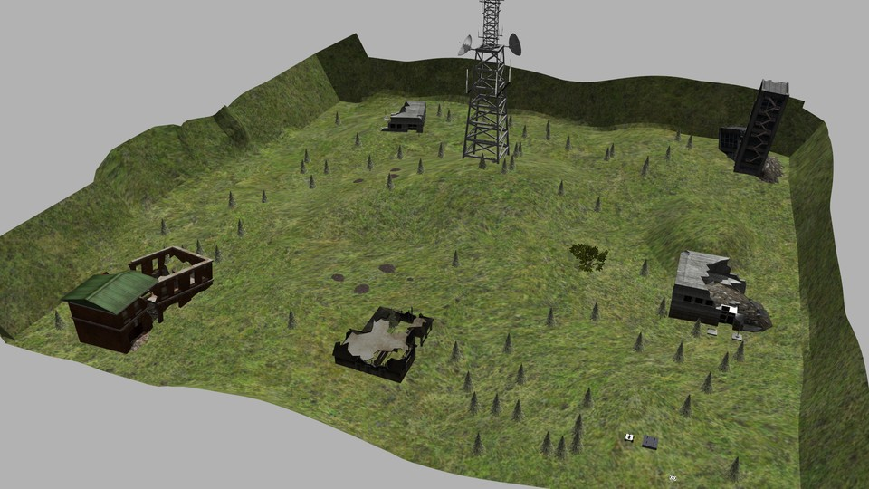
Video unavailable. Please reload to try again.
Terrain-aware guidance across uneven ground.
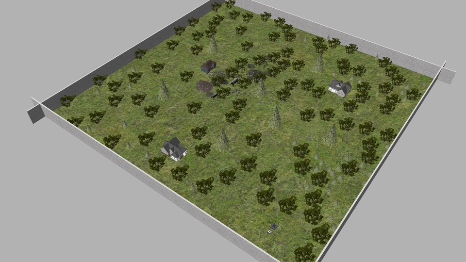
Video unavailable. Please reload to try again.
Navigation through cluttered forest terrain.
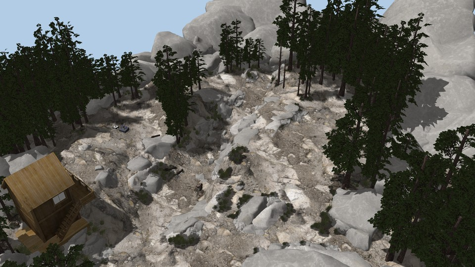
Video unavailable. Please reload to try again.
Guided navigation through rocky terrain.
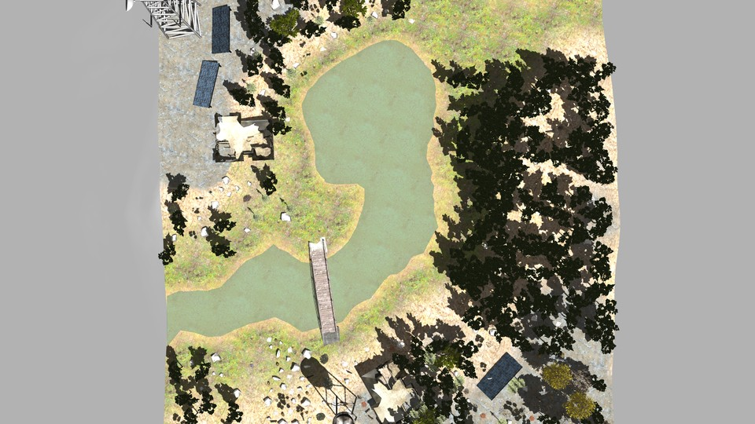
Video unavailable. Please reload to try again.
Aerial–ground navigation across a multi-stage route.
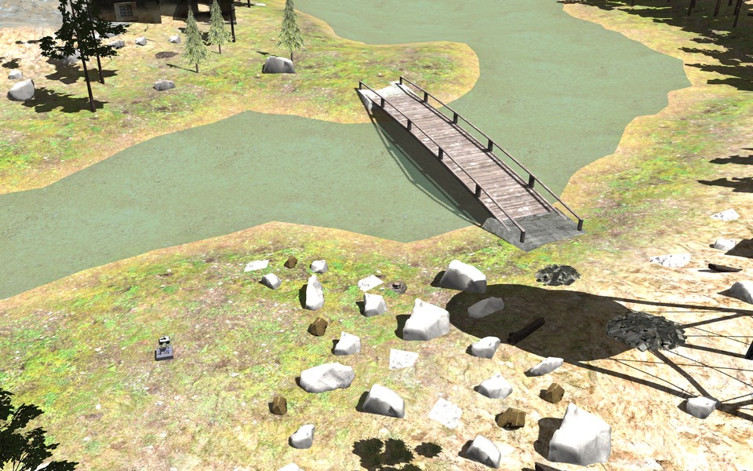
Scattered rocks near the bridge.
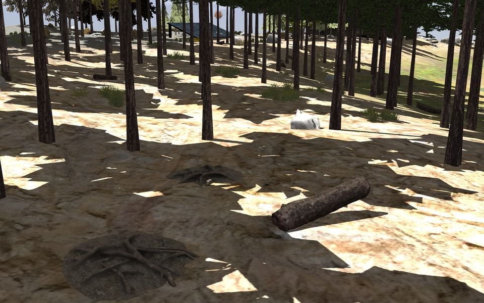
Roots, logs and uneven ground.
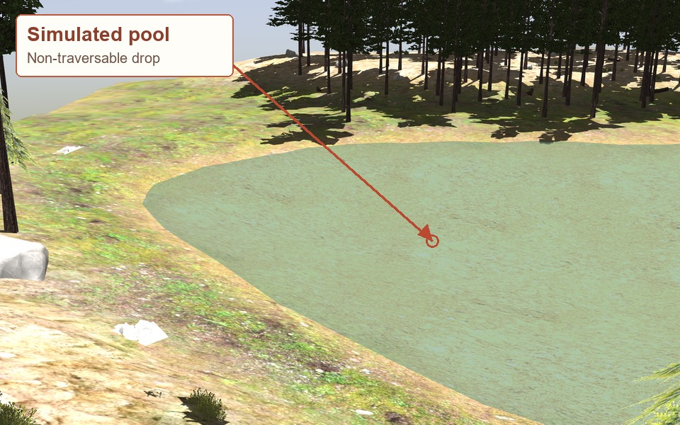
Entering the pool causes a fall.
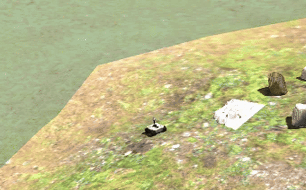
Approach, entry and fall at native speed.
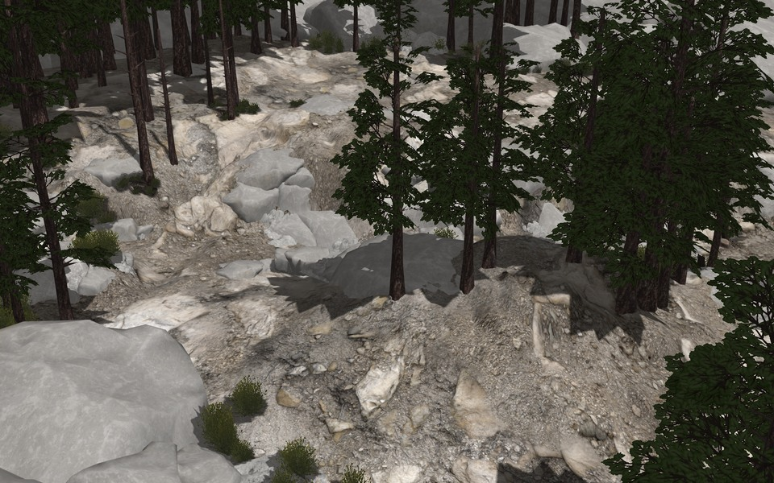
Constrained turns between boulders.
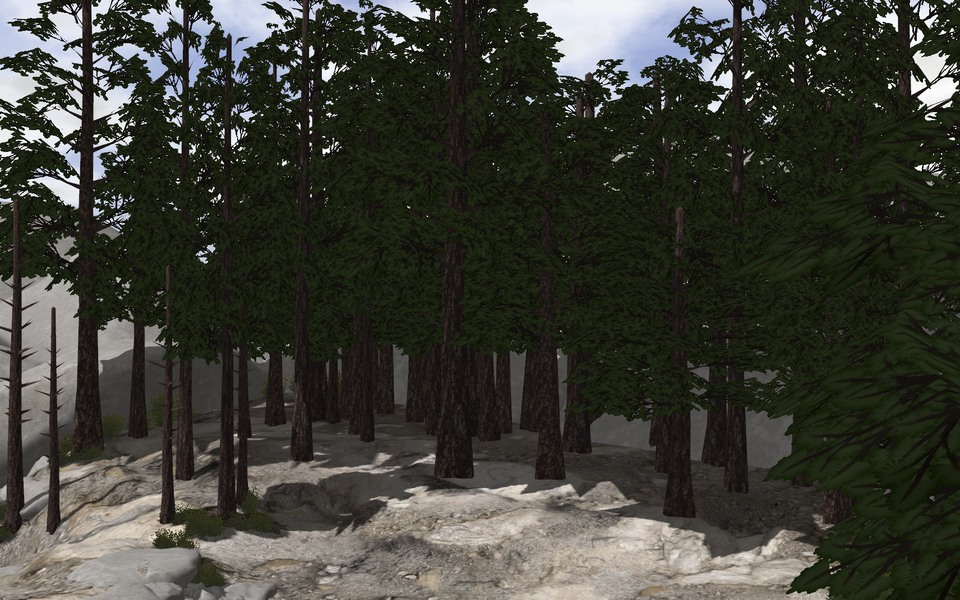
Trees and exposed rock surfaces.
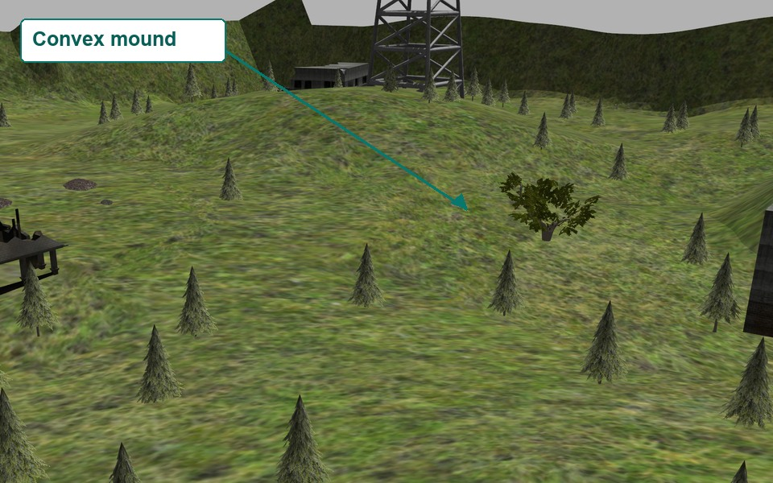
A large rise with substantial elevation change.
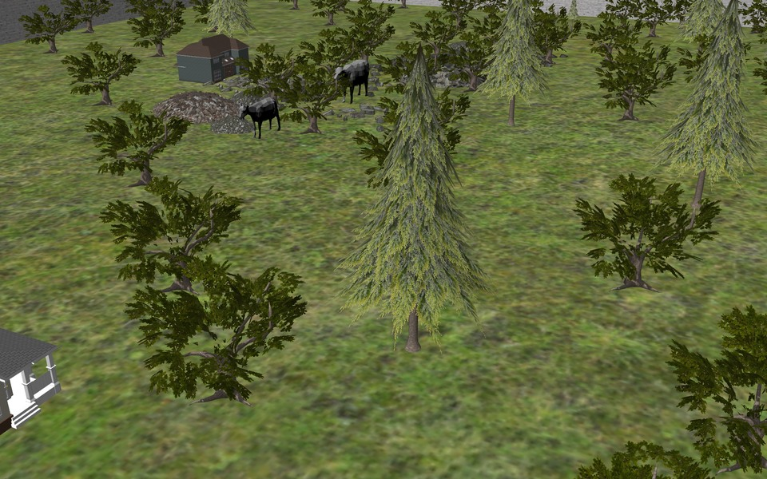
Trees and scattered ground obstacles.
The complete aerial–ground simulation testbed is planned for open-source release.
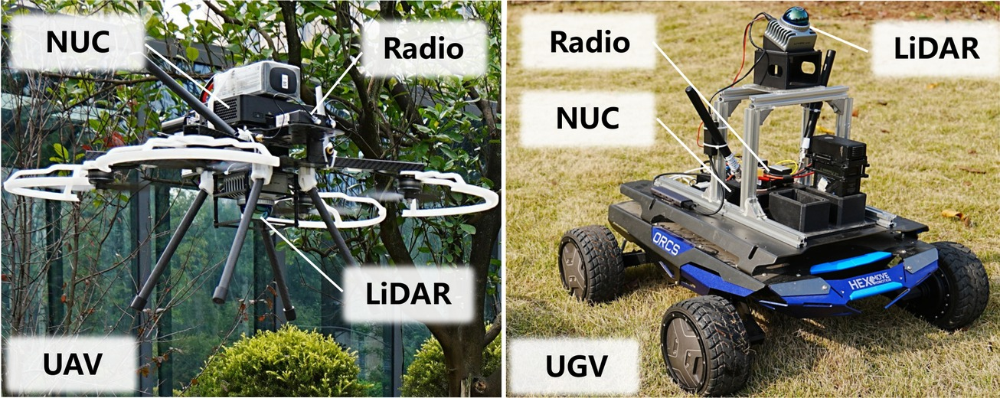
Video unavailable. Please reload to try again.
Aerial guidance and local terrain planning in a cluttered outdoor environment.
Video unavailable. Please reload to try again.
AGTP takes the connected ramp; UGV-only approaches the stairs and becomes blocked.
We plan to open-source the complete aerial–ground simulation testbed and release the system setup guide for real-world experiments.